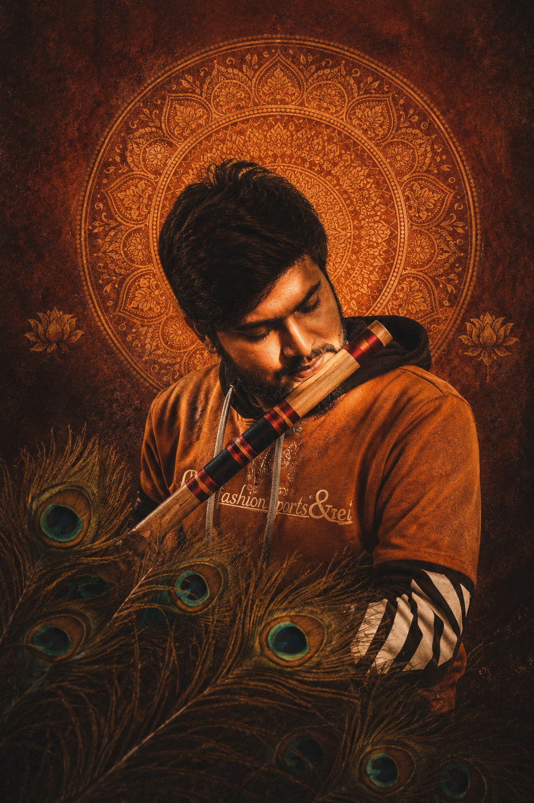

Romantic cover projects with expressive melodic layering.
Ideal for Bollywood flute covers and duet-driven visual releases built for social sharing.
Indian Flute Artist | Sitar Player | Music Creator
Breathing melodies through Bamboo
Tying Emotions with Strings
Music inspires, heals, and connects—and that is the essence of my journey as a flautist. I am Tanmoy Pramanik, an Indian flautist, performer, recording artist, and flute educator dedicated to creating soulful musical experiences through the bansuri. Explore my work and let's create something meaningful together.
Featured Videos
Curated live classical expression, contemporary band fusion, and popular flute interpretations.
Instagram Reel Showcase

About The Artist
Tanmoy Pramanik (Tanmoy Flute) is an Indian bansuri performer, recording artist, and flute educator whose musical journey bridges classical depth, contemporary melody, and expressive instrumental storytelling.
His signature sound is defined by nuanced breath control, lyrical phrasing, and an emotive touch that transforms ragas, fusion compositions, and beloved melodies into deeply resonant musical experiences for live concerts and digital audiences.
Grounded in the discipline of Hindustani classical music, exploring raga development, swara precision, and meditative acoustic resonance.
Blending bansuri textures with guitars, beatboxing, keyboard soundscapes, and cinematic arrangements to bring Indian flute to diverse audiences.
Dedicated to soulful stage presentations, polished studio recordings, and empowering the next generation of flute learners through structured training.
Musical Journey
The artistic path and key milestones shaping Tanmoy Pramanik's musical evolution.
The discovery of the Indian bamboo flute (bansuri). Cultivating the initial embouchure, breath discipline, and a lifelong emotional connection to acoustic airflow.
Deep immersion in Hindustani classical music, exploring raga structures, swara intonation, meend, and the spiritual depth of traditional flute gayaki.
Expanding sonic boundaries through cross-genre collaboration—combining bansuri with beatboxers, acoustic guitars, and keys in projects such as TRIMAD.
Bringing melodic flute storytelling to live concert stages, studio recording sessions, romantic covers, and creative collaborative visual releases.
Connecting with listeners worldwide through cinematic releases on YouTube and Instagram, building classical practice tools, and mentoring students in flute mastery.
Moments Through Music
Collaboration Showcase
Ideal for Bollywood flute covers and duet-driven visual releases built for social sharing.
Designed for contemporary instrumental storytelling with elegant visual identity.
Built around emotional phrasing, clean sound, and cinematic presentation.
Perfect for creators, event brands, and musicians seeking premium flute-driven content.
Music Categories
Soft melodic lines, lyrical breath control, and a cinematic emotional arc.
Immersive instrumental storytelling shaped for reflection, reels, and quiet atmosphere.
Beloved songs translated into warm bansuri expression with modern presentation.
Spiritual tone, calming phrasing, and reverent melodic depth.
Tradition and contemporary arrangement meeting in polished collaborative textures.
Ambient flute textures for background listening, mood content, and relaxed visual edits.
Reflections
Listener reactions, collaborative appreciation, and audience impressions.
"The way the flute carries emotion feels deeply cinematic and instantly calming."
"A beautiful balance of Indian melody and modern presentation. The visuals feel as polished as the sound."
"Every performance feels personal, expressive, and memorable. It stays with you."
Contact / Booking
Available for live concerts, studio sessions, wedding and corporate performances, and creative collaborations.